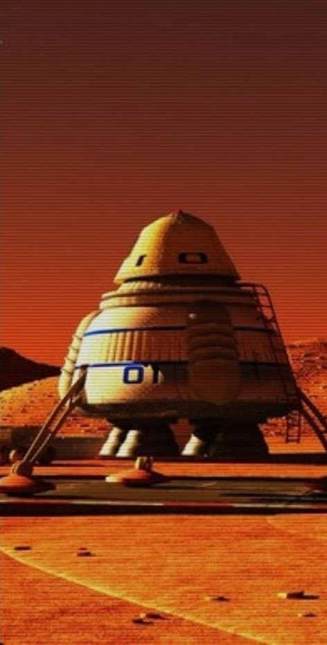

“We can’t survive much longer... All the ice, all the water... It’s vaporizing. We didn’t expect this—but it’s clear now: We caused it. This entanglement hell, born from our own ignorance...And that experiment. Earth is almost dry. The Oort Cloud, empty. The Kuiper Belt, silent. Enceladus is a dust bowl, and Venus? You don’t even want to know. The oceans are gone. Rivers are mud. People are dying, fast. The domes are holding, but not for much longer.
But.. There’s something new. IASA found a wormhole. It leads to Hydros: A system of water planets. If those sustainable drone ships don’t reach it soon, we’re finished. Everyone. Everything. We have a year...if we’re lucky.”

Unexpected heat dysfunction in the entire solar system.
2224. Global warming isn’t just on Earth. It is everywhere. The Sun, all the planets, belts, and moons in the solar system, once used to ice-cold space, have started to heat up violently. An intervention that was intended to slow the warming, which had been happening for the past 200 years, triggered a catastrophic sequence. The event, known now as 817, or the Great Quantum Entanglement Disaster, made things far worse and has accelerated the process on an unimaginable scale. Our human intrusions, long-standing and recent, have led to an unexpected heat dysfunction in the entire solar system and neighbouring areas.
a frightening heat spectre of derangement and entropy...
Scientists learned that when we transform and pollute our environment on earth, because of previously unaccounted-for quantum entanglement, other planets and astral objects are affected, like a metastatic cancer, radiating outward for light years in a frightening heat spectre of derangement and entropy. There used to be a global warming metaphor about us realising too late that the pot was boiling. Well, turns out the pot is now almost the size of the Milky Way.
Without water, only extinction is possible
Most life is wiped out in the space of a few months as all water vaporizes and vanishes. A few million human survivors huddle in domed cities. Without water, only extinction is possible. While science can engineer some water and food, it is not enough.
It will take AI to save us now.
2225.
In an incredible turn of events, a scientist from IASA manages to locate a wormhole near Mars that leads to a far-away system of water planets called Hydros.
Humanity must create new technology, and new ways that do not destroy the cosmos further, and return water to earth.
It will take AI to save us now. But there must be almost no intervention or interruption to these gentle water planets so as not to spread the entanglement further.